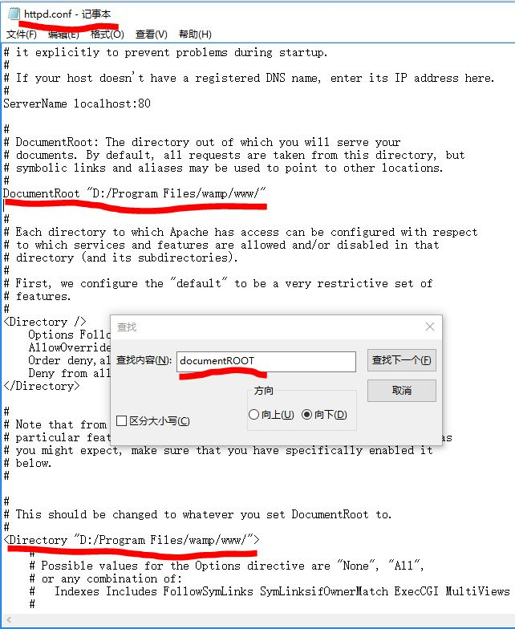
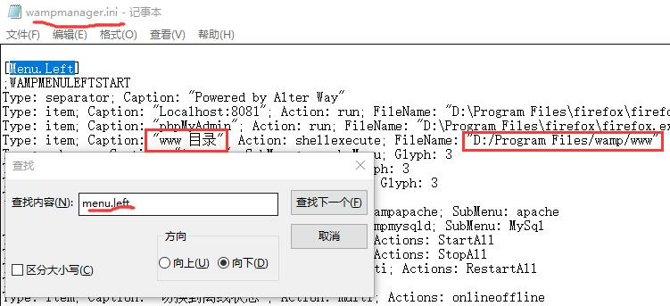
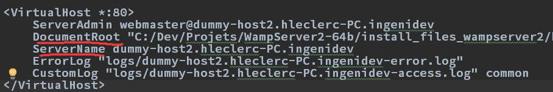
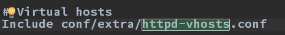
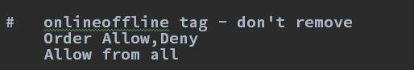

- 什么是PHP？
一个专为Web设计的服务器端脚本语言 - 什么是MySQL？
一个采用结构化查询语言SQL的关系数据库管理系统RDBMS - 为何要使用PHP&MySQL？
兼容性优良
快速入门
PHP代码标识
一般采用<?php...?>的格式,注意后侧?>可以省略；
echo
输出语句，可以将字符串输出(用双引号)，注意echo和输出内容之间必须有一个空格
1echo "hello world!"可以直接做运算
123echo 16+9 //输出25字符串
PHP中字符串如其他语言一样，可以双引号，也可以单引号；
特殊之处在于，PHP字符串连接是用.，而不是+。1echo "hello"."world!"
分号
每条语句末尾必须有分号(最后一条除外)
注释
PHP中单行注释用//标识，多行注释用/* ...*/标识，且必须处于<?php..?>之中
WAMPServer环境安装及问题处理
安装
此条在笔者上篇文章中已经涉及，可移步至:Ajax深入浅出
自定义网站根目录
WAMPServer默认根目录为WAMPServer目录下的www目录，一般情况下项目文件往往在其他目录下，此时就需要修改网站根目录
首先修改Apache中的httpd.conf文件
利用Ctrl+F搜索documentroot找到目标位置并修改为项目地址:此时虽然根目录修改成功，但是在菜单下仍然显示www目录，所以我们需要修改WAMP的根目录.ini和.tpl文件(以.ini为例)

至此我们完成了对菜单及配置上wamp网站根目录的修改。
多站点配置
在做项目时，常常需要多站点同时运行，那么我们如何进行多站点配置呢？
- 首先在/wamp/bin/apache/Apache2.2.21/conf/extra下找到httpd-vhosts.conf并对其进行修改
- 修改httpd.conf文件以加载该模块
- 修改httpd.conf文件以允许其他地址访问站点
自定义端口
端口被占用，Apache无法运行时需要更换一个端口，如何自定义端口？可移步至:Ajax深入浅出
变量
如何定义变量
变量名通过$标识，$val_name = val
变量名命名规则
- 变量名必须以字母/下划线开头
- 变量名组成除开头外，还可以是数字，下划线_，汉字
- 变量名不允许包含空格，下划线法或驼峰命名法区分
- PHP中变量名区分大小写
变量的数据类型
PHP是一门松散类型的语言，类似于JS，也就是不必声明变量数据类型，PHP会自动把变量转换为相应的数据类型
布尔类型
PHP中布尔类型的两个值true和false不区分大小写，即TRUE和true效果一样，这一点和JS不同
|
|
整型
可以使用十进制，八进制(数字前加0)，十六进制(数字前加0x)
浮点型
可以用小数或者科学计数法(e或E均可)表示
字符串
三种方式定义:单引号形式，双引号形式和Heredoc结构形式
双引号和单引号区别
单引号不解析内部变量，双引号解析内部变量12345678$hello = "hello";$string1 = "$hello,everyone";$string2 = '$hello,everyone';echo $string1; // hello,everyoneecho "<br/>";echo $string2; // $hello,everyone嵌套引号
单引号内部可以嵌套双引号；
双引号内部也可以嵌套单引号；
也可以使用转义符，使得内外使用同一种引号使用Herodoc结构形式表示较长字符串
1234567$hero = <<<HHH //HHH为标识符锄禾日当午，汗滴禾下土。谁知盘中餐，粒粒皆辛苦。HHH;echo $hero;
特殊类型1-资源
|
|
以上示例均为资源类型
特殊类型2-空类型
NULL:空类型，大小写不敏感。在下列三种情况下会被认为是空类型:
常量
如何定义一个常量
所谓常量，就是不变的量，包括自定义常量和系统常量。
自定义常量可以通过PHP中的函数define()定义bool define(string $constant_name,mixed $value[,$case_sensitive = true])
- 第一个参数constant_name表示常量名称，命名规则与变量一致，但是不带$
- 第二个参数value表示常量的值
- case-sensitive 可选参数，指定是否大小写敏感，true为不敏感。默认为false。
- string 表示该参数类型应该为字符串类型；mixed表示该参数类型可以为多种类型
常量的作用
- 避免重复定义，篡改变量值
- 提高代码可维护性
系统常量
PHP中自带的已经定义好的常量，常见的有:
- __FILE__ PHP程序文件名，获取当前文件在服务器的物理位置(两个下划线！)
- __LINE__ PHP程序文件行数，获取当前代码在第几行
- PHP_VERSION 当前解析器的版本号
- PHP_OS 执行当前PHP版本的操作系统名称
常量如何取值
直接取常量名使用
12345define("PI",3.14);$r = 5;$area = PI*$r*$r; //计算圆的面积使用constant()函数更为灵活
1234567891011121314$p = "";define("PI1",3.14);define("PI2",3.141);$precision = "中";if($precision == "中")｛$p = "PI1";｝else if($precision == "高")｛$p = "PI2";｝$r = 5;$area = constant($p)*$r*$r;echo $area;
如何判断常量是否被定义
利用defined函数判断bool defined(string constants_name)
运算符
很多运算符在JS中已经有所涉及，所以在这里只列出PHP中独有的
赋值运算符
- “=”
只是简单的赋值，与JS中基本类型之间的=赋值相同 - “&”
引用赋值，两者之后的修改都会互相影响12345678$a = "hello";$b = $a;$c = &$a;$a = "hello,Jack";echo $b."<br/>"; // helloecho $c."<br/>"; // hello,Jack
比较运算符
“<>” 不等运算符$a<>$b 若$a不等于$b则返回true
字符串连接运算符
- “.”连接符，相当于JS中的”+”
- 因此”.=”就相当于”+=”
错误控制运算符
将@放置在一个PHP表达式之前。可以将该表达式陈胜的错误忽略掉。
在php.ini中激活track_error特性后，表达式所产生的任何错误信息都会被存放在变量$php_errormsg中，此变量每次出错时都会被覆盖。1234$conn = @mysql_connect("localhost","username","password");echo "出错啦！原因是:".$php_errormsg;